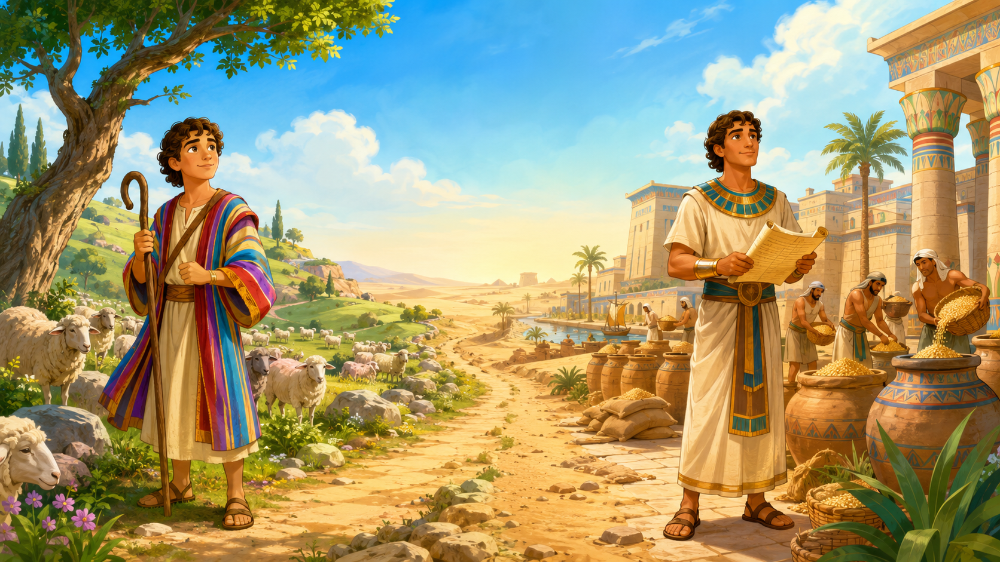

A criança pode responder oralmente por 100% dos pontos.

EBF 2026Uma aventura
Uma aventura
no Egito
José — Dos Sonhos ao Palácio
Prepare a aventura
Som do jogo
Banco completo: 90 perguntas • Gênesis 37 e 39–41
Participantes presentes
Cadastre as crianças
Digite um nome por linha na equipe correspondente. A roleta sorteará sem repetir até todas participarem.
Total cadastrado: 0
JogadorPergunta 1 de 15
⭐⭐⭐
🧒🏽
⏱️
20segundos
EBF 2026 • Uma aventura no Egito
Trajetória + participante
Trajetória de José
▼
Casa de
Jacó
Jacó
Campo dos
irmãos
irmãos
Viagem ao
Egito
Egito
Casa de
Potifar
Potifar
Prisão
Palácio de
Faraó
Faraó
Crianças cadastradas
▼
QUEM
VAI?
VAI?
Auditoria — todos os nomes cadastrados (0)
Muito bem!
✨ ⭐ ✨
Jornada concluída
Parabéns!
0pontos
Certificado simbólicoConhecedor da Jornada de José
concedido a